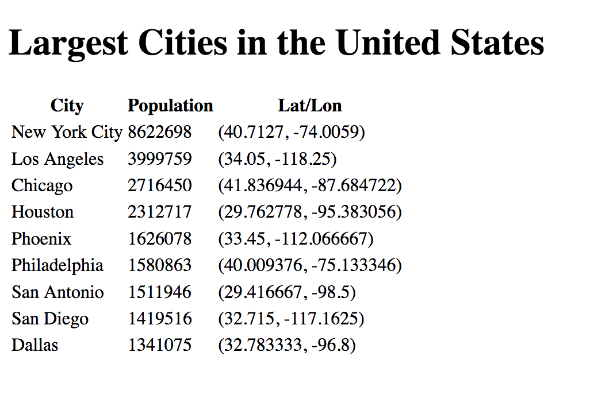

This lesson is a self-guided tutorial. In it, you will learn about a data format that is commonly used in JavaScript programs, JSON (pronounced “Jason”). And you will get additional practice working with the DOM and manipulating web page components.
Read the article, JSON Basics: What You Need to Know and answer the following questions as you go. Skip the last section, “How to work with JSON using both JavaScript and PHP.”
Read the Wikipedia article on GeoJSON, answering the following questions as you go.
In this studio, you will build a web page that pulls in data on the largest cities in the United States, and dynamically render the data in an HTML table. The data will be in the GeoJSON format, with the latitude/longitude coordinates of the city represented as Point features.
Warning
While we provide several code snippets for you below, you should not copy/paste them into your file unless we explicitly instruct you to do so. Writing the code yourself provides an opportunity for you to fully understand what each and every line is doing.
Create a new folder for this project, named something like cities_json_studio. Within that folder, create a file index.html and add the following basic document code (feel free to copy/paste this one):
<!doctype html>
<html>
<head>
<meta charset="utf-8">
<title>Largest Cities In the US</title>
</head>
<body>
<h1>Largest Cities in the United States</h1>
<div id="dataContainer"></div>
</body>
</html>
Now we will set up our cities data JSON file. Visit this page and click on the Download ZIP button. When the file finished downloading, open the ZIP file to find a directory containing cities.json. Move this file to the same directory as your HTML file.
Spend a minute inspecting the cities.json file. Notice that it contains a single JS variable, data, that is a GeoJSON string. Since the string is very long and broken across multiple lines, each line ends with a \ character to “escape” the newline. Omitting one of these characters would produce a JS error when loading the file.
Note
JSON data will more often be structured as plain text, and not a JS string. By that, we mean it will usually look like this. To work with such a file would require us to introduce the concept of web (or AJAX) requests, which we want to avoid at this point.
Notice that the data contains a single FeatureCollection that has several US cities as its features. What data do we have about each city?
Now let’s pull our data into the HTML page. Add this script tag within the head:
<script type="text/javascript" src="cities.json"></script>
This will load our data into the HTML page. When it loads, the JSON string will be contained in a variable named data that will be accessible to other JS within the page. We’ll verify that the data loaded correctly in a moment.
Next, create a new, empty script tag in the head:
<script type="text/javascript">
</script>
Within this block, create a function named getData. This function should parse the data contained in the data variable from JSON text into a JS object, and return the object. This is how we carry out this task:
function getData() {
return JSON.parse(data);
}
Below getData, create another function, renderTable. This function will do the heavy lifting of building up the HTML for our table using the cities data. For now, however, let’s have it simply get the data and log it to the console.
function renderTable(){
var cityCollection = getData();
console.log(cityCollection);
}
Open your index.html file in a web browser, and then open up the dev tools (right-click > Inspect Element, or Tools > Web Developer > Toggle Tools on Firefox). Look at the console. Do you see any data?
Tip
It’s possible that you will see an error in your console. This means that you’ve missed some syntax in one of the previous steps. Read the error, and back up to correct your code.
Spoiler alert: No! There is nothing has been logged to the console. This is because we still haven’t called the renderTable function from anywhere in our page. Let’s do that now.
Add an onload event handler to the body element.
<body onload="renderTable()">
Now, when we load the page the renderTable function will be called when the body element is finished loading. More precisely, in JS-speak, the body’s onload event will fire, at which point the JS snippet renderTable() will be executed.
Warning
If you omit the parens, and put simply onload="renderTable", the function will not be called. Why?
Reload your page, and you should now see the cities GeoJSON object logged to the console. Spend a minute inspecting it. What does the structure look like? Note how the JSON syntax in the original string within cities.json was translated directly to JS objects, arrays, strings, etc.
Now that we’ve confirmed that the data has loaded, let’s build our table!
Notice that you have an empty div in your page already. It looks like this:
<div id="dataContainer"></div>
This will serve as an insertion point for our table. We’ll grab the DOM node using it’s ID (specifically, we’ll call document.getElementByID()), and then insert the table into the node.
There are multiple ways that we might do this. Our method here will be to build up a single large string that contains the HTML representing a table. Then we can insert this string as the innerHTML attribute of our div.
Another method would be to create new DOM nodes representing the table, it’s rows, and cells one at a time, and piece them together. This technique would lead to more complicated code and take longer to run, however.
To proceed, go to your renderTable function and remove the console.log statement. Then add a new variable that contains the beginning HTML code for our table.
var tableStr = "<table>"+
"<tr>"+
"<th>City</th>"+
"<th>Population</th>"+
"<th>Lat/Lon</th>"+
"</tr>";
Notice that there’s an opening table tag, but not a closing table tag. We’ll have to remember to add the closing tag after creating the individual rows of the table.
Now we want to loop through our cities, and one at a time create a new table row to append to tableStr.
Looking at the structure of the JSON, we can see that the cities are contained in an array that is the feature property. Let’s grab that array:
var cities = cityCollection.features;
Great! Now we can loop over the cities array.
for (var i=0; i<cities.length; i++) {
// build a new table row
}
Let’s make sure what we have so far works. Inside the loop, simply log the data for a given city
for (var i=0; i<cities.length; i++) {
var city = cities[i];
console.log(city);
}
Reload your page and look at the console messages. You should see several JS objects, one for each city in the data set. Again, if you see an error message, take this opportunity to read it and correct your code.
Once your code works, remove the console.log. In it’s place, add a line to append some new HTML to tableStr.
tableStr += "<tr>"+
"<td>"+city.properties.name+"</td>"+
"<td>"+city.properties.population+"</td>"+
"<td>("+city.geometry.coordinates[0]+", "+city.geometry.coordinates[1]+")</td>"+
"</tr>";
This will build up our table, one row at a time. Outside the loop, let’s cap off our table HTML.
tableStr += "</table>";
Now we can grab our container node and insert the tableStr as its contents.
var container = document.getElementById("dataContainer");
container.innerHTML = tableStr;
Reload your page, and hopefully you’ll see the results directly in the page!
It will look like this:
There are 9 cities in our table now. Let’s add another, so that we have the 10 largest cities represented. Go to Wikipedia and find info on the 10th largest city in the US, and add the data for this city to cities.json.
Warning
Be mindful of the syntax details when adding another city to the GeoJSON structure. There are lots of little ways that we can get the syntax wrong: Leaving off a comma after an array entry, forgetting to escape the end of each line with \, and so on. If your syntax in cities.json is off, you’ll see an error message in the console with the specific line number of the error.
Reload the page, and you’ll see the new city listed at the bottom. Notice how to add new data to our page, we didn’t have to touch any code in index.html. Pretty cool, huh? We could continue on in this way, adding more and more data. Since the data is external to the web page, it’s easy to add more.
If you finish up the tasks above and have some energy to spare, add some CSS styles to your table to make it look nicer, and more readable.
w3c JSON Tutorial - An accessible yet in-depth tutorial on JSON.
geojson.io - An interactive web app that can generate GeoJSON based on features that you draw on a map.
geojson.org - The official specification for GeoJSON.